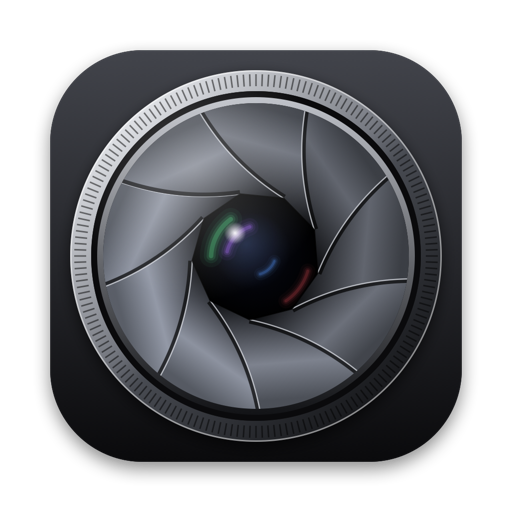
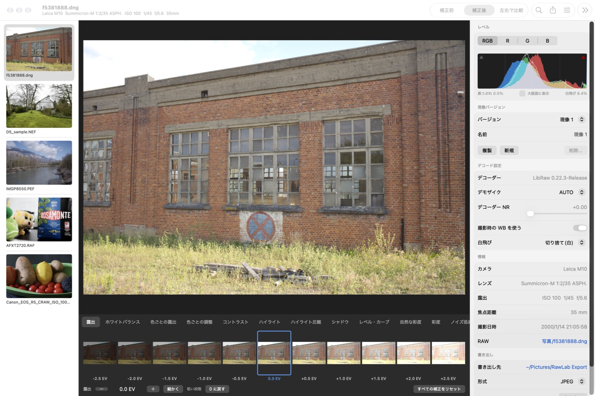
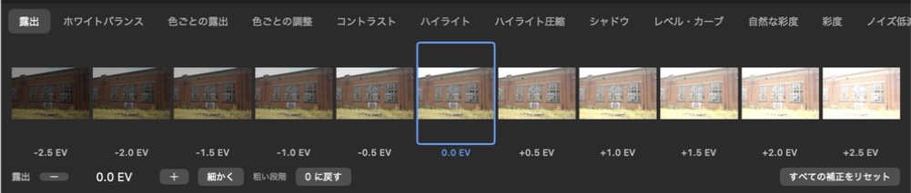
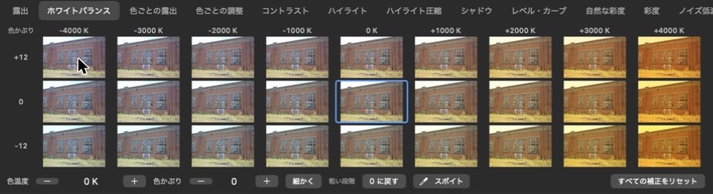
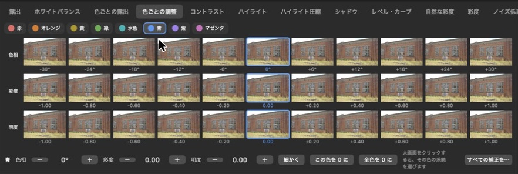
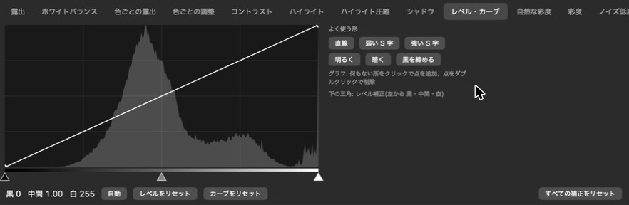
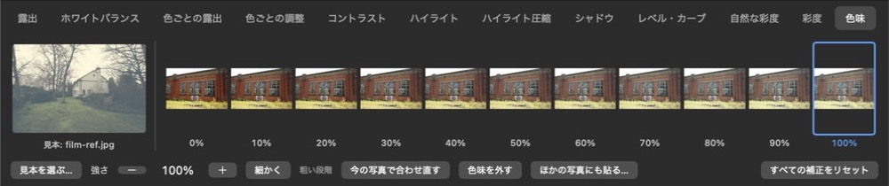
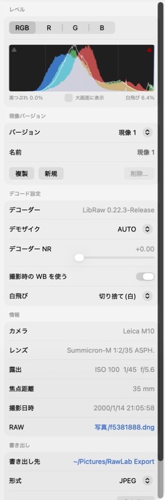

新しい版の RawLab.app を「アプリケーション」フォルダへドラッグし、「置き換える」を選びます。 現像の設定や書き出し履歴はそのまま引き継がれます(アプリとは別の場所に保存されているため)。

| 場所 | 役割 |
|---|---|
| 1写真の一覧 | 登録したフォルダの RAW が並びます。小さな印: □2 はバージョンが 2 つ、✓ は書き出し済み、⟳ は書き出した後に変更あり(要再書き出し)、⚠︎ は RAW が見つからない。左上のボタンでフォルダの列を表示できます。 |
| 2大きな画面 | 現像中の写真です。サムネイルにマウスを乗せると、その値を一時的にここで確認できます。画像のすぐ下の右端のボタンで、トリミング、補正前 / 補正後 / 左右で比較、虫眼鏡、等倍表示を切り替えます。 |
| 3調整のタブ | 露出・ホワイトバランス・色ごとの調整など、調整する項目を選びます。 |
| 4段階のサムネイル | 選んだ項目を段階的に変えた見本です。クリックで決めます(4 章)。 |
| 5右の欄 | レベル(ヒストグラム)、現像バージョン、デコード設定、撮影情報、書き出し(11 章)。 |
| 6ツールバー | 書き出し、右の欄の表示切り替え。 |
フォルダの列の左下にある 「＋ フォルダを追加」(またはメニュー「ファイル › フォルダをライブラリに追加…」⌘O)で、 RAW が入っているフォルダを選びます。サブフォルダの中の RAW もまとめて登録されます。
一覧から写真を選ぶと、大きな画面に表示されます。キーボードの ↑↓ でも切り替えられます。
下のタブで項目を選び、サムネイルをクリックして決めます(次のページ)。調整は自動で保存されます。保存ボタンはありません。
ツールバーの 書き出しボタン(↑の付いた四角)、または ⌘E で、JPEG などに書き出します。保存先は自動で決まります。
| 項目 | 内容 |
|---|---|
| 書き出し先 | ピクチャ › RawLab Export › 撮影年 › 撮影日 の中(右の欄の「書き出し先」で変更できます) |
| ファイル名 | 撮影日時_元のファイル名.jpg(2 つ目以降のバージョンはバージョン名が付きます) |
| 形式 | JPEG / TIFF(16bit)/ HEIC(右の欄の「形式」で選びます) |

| タブ | 内容 |
|---|---|
| デコーダー | いちばん左。RAW を読み込む 5 種類のデコーダーの結果を並べて比べ、切り替えます(9 章) |
| 露出 | 全体の明るさ |
| ホワイトバランス | 色温度(横)× 色かぶり(縦)のマス目。スポイトつき(5 章) |
| 色ごとの露出 | R・G・B それぞれの明るさ(6 章) |
| 色ごとの調整 | 8 つの色の系統ごとに 色相・彩度・明度(6 章) |
| コントラスト | 明暗の差 |
| ハイライト | 明るい部分を抑えて階調を戻す |
| ハイライト圧縮 | 白より明るい部分を丸めて収める(白飛びの復元と組み合わせる。10 章) |
| シャドウ | 暗い部分を持ち上げる / 沈める。動かすのはヒストグラムの左の決めた範囲(1/8・1/4・1/3・1/2、既定は 1/4)の暗さだけで、それより明るい所は変わりません。範囲はシャドウのタブを開いている間、右のヒストグラムの下で選ぶか、ヒストグラムの黄色い線をドラッグして決めます。0.6.2 までにシャドウを動かしたバージョンは、見た目が変わらないよう以前の方式(全体に効く)のまま残り、範囲を選ぶと新しい方式になります |
| レベル・カーブ | レベル補正とトーンカーブを 1 つのグラフで(7 章) |
| 自然な彩度・彩度 | 鮮やかさ(自然な彩度は、もともと鮮やかな色や肌を上げすぎない) |
| 色味 | 見本の写真の色味に近づける。強さを段階で選ぶ。ほかの写真にもまとめて貼れる(8 章) |
| ノイズ低減・シャープ | 等倍の切り出しで比べます。大画面をクリックすると、見る場所(黄色い枠)が移動します |

右の欄の「撮影時の WB を使う」をオフにすると、カメラが記録した WB ではなく昼光の WB を基準にします。
R・G・B の 3 段のサムネイルで、それぞれの色の明るさ(EV)を独立に変えます。 ホワイトバランスでは合わせきれない微妙な色のずれを直すときに使います。 右の欄の RGB / R / G / B で 1 色ずつ表示すると、色ごとの白飛びを確かめながら調整できます。

| 調整 | 範囲 | 効き方 |
|---|---|---|
| 色相 | -60°〜+60° | その系統の色を、隣の色の方へずらします(例: 黄を緑寄りに) |
| 彩度 | -1 〜 +1 | その系統の色だけ鮮やかさを変えます(-1 で灰色) |
| 明度 | -1 〜 +1 | その系統の色だけ明るく / 暗くします |

| グラフの表示 | 意味 |
|---|---|
| 横軸 / 縦軸 | 元の写真の明るさ(左が暗い) / 仕上がりの明るさ(上が明るい) |
| 白い線 | レベル補正とトーンカーブを両方かけた、最終的な明るさの変化。三角を動かしても、カーブの点を動かしても、この線が変わります |
| 灰色の山 | 補正前のヒストグラム(明るさの分布) |
| 水色の線 | 補正後のヒストグラム。どの明るさがどこへ移ったかがわかります |
好きな写真(映画の 1 コマ、フィルムで撮った写真、以前に仕上げた自分の写真など)を見本にして、今の写真をその色味に近づけます。

| ボタン | はたらき |
|---|---|
| 今の写真で合わせ直す | 同じ見本で色味を作り直します。露出やホワイトバランスを大きく変えたあとに押してください(強さはそのまま) |
| 色味を外す | 色味をなくします |
| ほかの写真にも貼る… | 一覧のほかの写真を選んで、同じ見本の色味をまとめてかけます(下の表) |
| 貼り方 | 向いている場面 |
|---|---|
| 1 枚ずつ合わせ直す | 写真ごとに RAW を読んで、それぞれ見本へ近づけます。明るさや色の違う写真が混ざっているとき |
| そのまま貼る | 今の写真で作った色味を同じようにかけます。同じ光で撮った続きの写真をそろえたいとき(速い) |
貼る先は、それぞれの写真の最初のバージョン(一覧で開いたときのもの)です。露出などほかの補正は変わりません。
RawLab には、RAW を画像にする「デコーダー」が 5 種類あります。同じ RAW でも色や細部の出方が少しずつ違うので、 「デコーダー」タブで並べて見比べ、好きなものを選べます。マウスを乗せると大画面で確認できます。
| デコーダー | 特徴 |
|---|---|
| RawLab エンジン | RawLab 独自の現像処理。白飛びの復元(10 章)に対応。デモザイクは高画質な方式(LINEAR を選ぶと簡易な方式)。Fujifilm の X-Trans には未対応 |
| LibRaw | 定番のオープンソース。デモザイクの方式(AHD・DCB など)とデコーダーのノイズ低減を選べる。白飛びの復元(ブレンド方式)にも対応 |
| Core Image | macOS に組み込みの RAW 現像。ノイズ低減つき |
| rawler | Rust 製のオープンソース。軽くて速い |
| RawLab ネイティブ | 外部のライブラリを使わず、RAW ファイルの読み取りから展開までを RawLab だけで行う新しいデコーダー。仕上げは RawLab エンジンと同じ処理なので、デモザイクと白飛びの復元も同じように選べる。いま開けるのはニコン D5・D800 の NEF、オリンパス E-M1 Mark III の ORF、DNG(リコー・ペンタックス・ライカなどと、iPhone の ProRAW)。ProRAW の JPEG XL の展開だけは macOS の機能を使う |
1 枚の RAW に、複数の現像(例: カラー版とモノクロ版)を持てます。右の欄「現像バージョン」で
空や白い壁が真っ白に飛んでしまった写真でも、RAW にはまだ情報が残っていることがあります。RawLab では次の組み合わせで救えます。
上の白飛び表示は「仕上がりで真っ白になった所」です。それとは別に、センサーそのものがそれ以上の明るさを記録できなかった所を表示できます。 「デコード設定」の センサーの飽和を表示 をオンにすると、飽和した色で塗られます。下に、色ごとの飽和した画素の割合も出ます。
| 色 | 意味 |
|---|---|
| 赤・緑・青 | その 1 色だけが飽和。残りの 2 色から「色を補って復元」でよく戻る |
| 黄・シアン・マゼンタ | 2 色が飽和(黄 = 赤と緑、シアン = 緑と青、マゼンタ = 赤と青)。明るさは戻るが、色は周りから推定する |
| 白 | 3 色とも飽和。元の色も明るさもわからない |
露出やハイライトの補正をどう動かしても、白い所の情報は戻りません。色の付いた所は「復元の強さ」と「ハイライト圧縮」で階調が見えてきます。
| 設定 | はたらき |
|---|---|
| 黒より暗い値を残す | 暗部のノイズは本来、黒をはさんで上下に揺れています。下半分を切り捨てずに残すので、最暗部が浮いたり色がかぶったりしにくくなります。夜景や高感度の、黒に近い部分が多い写真で効きます(明るい写真ではほぼ変わりません) |
| 遮光画素で黒を測る | センサーの縁にある光の当たらない画素から、その 1 枚の本当の黒と、行ごとの黒の揺れ(横縞)を測って引きます。下に「ファイル 64.0 / 実測 66.8」のように、ファイルに書かれた黒と測った黒が出ます。RawLab ネイティブで、遮光画素を残している DNG(リコー・ペンタックスなど)だけ使えます |
| 暗部のノイズ低減 | 写真から明るさごとのノイズの大きさを測り、まわりのばらつきがノイズ程度の所だけをなめらかにします。境目や羽毛のような細かい模様は残ります。暗い所ほど強く効きます。下に測ったノイズの大きさが出ます |

ヒストグラム(明るさの分布)。RGB / R / G / B の切り替え、黒つぶれ・白飛びの割合、「大画面に表示」。
バージョンの切り替え・複製・新規・名前・削除(9 章)。
デコーダー(デコーダータブで切り替え)、デモザイク(LibRaw・RawLab エンジン・RawLab ネイティブ)、デコーダー NR(LibRaw と Core Image のノイズ低減)、 撮影時の WB を使う、白飛び(切り捨て / 色を補って復元)と復元の強さ、センサーの飽和を表示、黒より暗い値を残す・遮光画素で黒を測る・暗部のノイズ低減(10 章)。
カメラ、レンズ、露出、焦点距離、撮影日時、ニコンのピクチャーコントロールなど。「RAW」のリンクで Finder に表示します。
書き出し先(クリックで変更)、形式、前回の書き出し(クリックで Finder に表示)、書き出し / 再書き出し。
| もの | 場所 |
|---|---|
| RAW | 登録したフォルダのまま(RawLab は書き込みません) |
| 現像の設定・書き出し履歴 | ピクチャ › RawLab Library |
| 色味(見本の縮小コピーと色の対応表) | ピクチャ › RawLab Library › Looks |
| 書き出した写真 | ピクチャ › RawLab Export › 撮影年 › 撮影日(変更可) |
| メーカー | 拡張子 |
|---|---|
| Nikon | NEF / NRW |
| Canon | CR3 / CR2 / CRW |
| Sony | ARW / SRF / SR2 |
| OM System / Olympus | ORF |
| Fujifilm | RAF(RawLab エンジンは X-Trans 未対応。ほかのデコーダーで開きます) |
| Panasonic / Leica | RW2 / RAW / RWL |
| Pentax / Ricoh | PEF / PTX |
| Samsung | SRW |
| Hasselblad / Phase One / Sigma ほか | 3FR / FFF / IIQ / MOS / MEF / X3F / MRW / DCR / KDC / ERF |
| DNG(Leica・Pentax・スマートフォンなど) | DNG |
zip をもう一度ダブルクリックして展開し直し、新しくできた RawLab.app を使ってください。 それでも開けない場合は、Finder で RawLab.app を右クリック ›「開く」を選びます。
RAW のフォルダを移動・改名したか、外付けディスクが外れています。ディスクをつなぐか、移動先のフォルダを「＋ フォルダを追加」で登録して、⟳(再スキャン)を押してください。 同じファイルだと自動で判断して、現像の設定を引き継ぎます。
フォルダの列の左下の ⟳(再スキャン)を押してください(⌘R)。
下のパネルの右下の「すべての補正をリセット」を押します。元に戻したい状態を残したいときは、先に「現像バージョン」の「複製」で控えを作っておくと安心です。
「白飛び」を「色を補って復元」にしているときに、強い色収差などで起きることがあります。「切り捨て(白)」に戻すか、別のデコーダーで見比べてください。
最初に写真を開くときと、ノイズ低減・シャープのタブ(等倍の切り出し)、虫眼鏡、等倍表示は、フル解像度の読み込みに数秒かかることがあります。
RawLab は LibRaw・rawler などのオープンソースソフトウェアを使っています。一覧と全文は、RawLab.app を右クリック ›「パッケージの内容を表示」› Contents › Resources › Licenses にあります。
RawLab のソースコードは https://github.com/kamemamo/rawlab で公開しています(MIT ライセンス)。